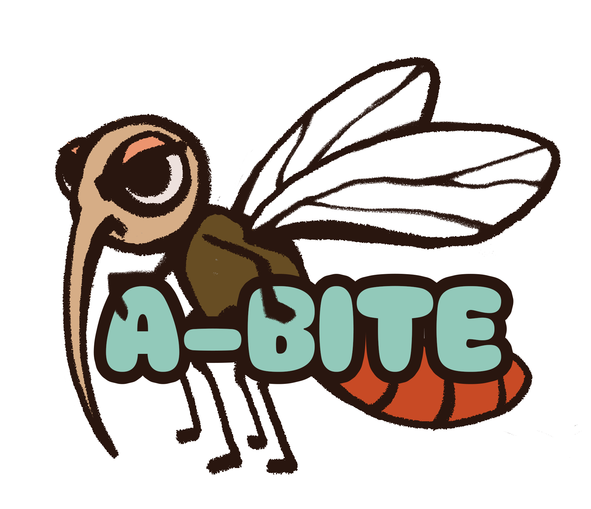

A mosquito bite. A rapid test.
A connected network.


Student research project · M1 Sino-French Program 2026–2027 · Design concept
Built on peer-reviewed precedents
Four layers, one loop.
Specificity lives in chemistry, never in hardware. Swap the recipe — the reader stays exactly the same.
Recipe
Versioned primer panels, released like software. A new pathogen means a new recipe — never new hardware.
Cartridge
Single-use, fully closed, extraction-free. Lyophilized RT-LAMP chemistry inside — the sample itself rehydrates it.
Reader
The only reusable part, with zero pathogen-specific components: one heater, one optical path, updatable software.
Surveillance
Anonymized and aggregated at upload. Every run quietly becomes an epidemiological data point.
The reader is generic. The cartridge is the app.
The reader handles the physics — heating, fluorescence, upload — and knows nothing about pathogens. All specificity is freeze-dried into a closed, credit-card-sized cartridge, while a microneedle sampling pen collects interstitial fluid at the bite site. No blood draw, no extraction.
Read the engineering notes
Progress, in order.
-
Recipe v0.3 — dual-target DENV panel (3′UTR + NS5) covering serotypes 1–4.
-
Reader specification — two programmable isothermal steps added for CRISPR confirmation.
-
Architecture freeze — four-layer test-to-surveillance design locked for WP2.
You got A-BITE, we got you.
A-BITE is an early-stage concept. We welcome collaborators across microfluidics, molecular chemistry, and public health.